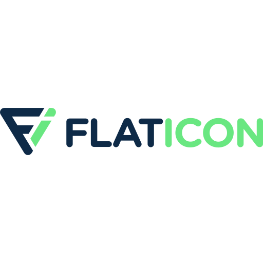

<img>標籤
格式：<img src="圖片連結" alt="掉圖的時候，會顯示這段文字" width="寬" height="高" align="對齊方式" ></img>

響應式圖片
可以只設定「寬（Ｗ）」或「高（Ｈ）」來控制圖片大小
如果用「px/pt/rem」等單位，會固定大小
<img src="img/media_pic1.png" width="400px" height=""></img>
但如果使用百分比「%」來當作單位的話，可以根據螢幕尺寸大小調整控制圖片
<img src="img/media_pic2.jpeg" width="100%" height=""></img>
align可以控制文繞圖方式
如果前面有文字，圖片會被往後推，在這邊等於「與文字排列」 置中:文字文字文字文字文字文字文字文字文字文字文字文字文字文字文字文字文字文字文字文字文字文字文字文字文字文字文字文字文字文字
置中:文字文字文字文字文字文字文字文字文字文字文字文字文字文字文字文字文字文字文字文字文字文字文字文字文字文字文字文字文字文字
如果前面有文字，圖片不會被往後推
 置左：文字文字文字文字文字文字文字文字文字文字文字文字文字文字文字文字文字文字文字文字文字文字文字文字文字文字文字文字文字文字
置左：文字文字文字文字文字文字文字文字文字文字文字文字文字文字文字文字文字文字文字文字文字文字文字文字文字文字文字文字文字文字
如果前面有文字，圖片不會被往後推，因為他已經在後面了
 置右：文字文字文字文字文字文字文字文字文字文字文字文字文字文字文字文字文字文字文字文字文字文字文字文字文字文字文字文字文字
置右：文字文字文字文字文字文字文字文字文字文字文字文字文字文字文字文字文字文字文字文字文字文字文字文字文字文字文字文字文字
其實圖片還可以當作連結
格式：<a href="連結前往的網址"><img src="圖片網址" width="寬" height="高"></a>
比如我們常看到的icon連結，可以有效將資訊視覺化
這邊順便推薦我常用的icon圖庫（大心）：
<video>標籤
這個要把檔案先載下來放在你的專案資料夾，每次連頁面會重載一次，導致載入速度變慢
但這個相對妥當，因為不會突然掉連結（ＥＸ：原始連結被刪掉等
<iframe>標籤
這個檔案不需要先載下來，但需要靠網路，且不能保證外部連結永遠都在
<iframe width="560" height="315" src="https://www.youtube.com/embed/AN0rQR0RlOM" frameborder="0" autoplay; encrypted-media;
gyroscope; picture-in-picture" allowfullscreen></iframe>
這邊的連結不能直接放上面網址列複製的！要選影片下面，「分享」>「嵌入」然後會出現程式碼，直接貼上才會成功